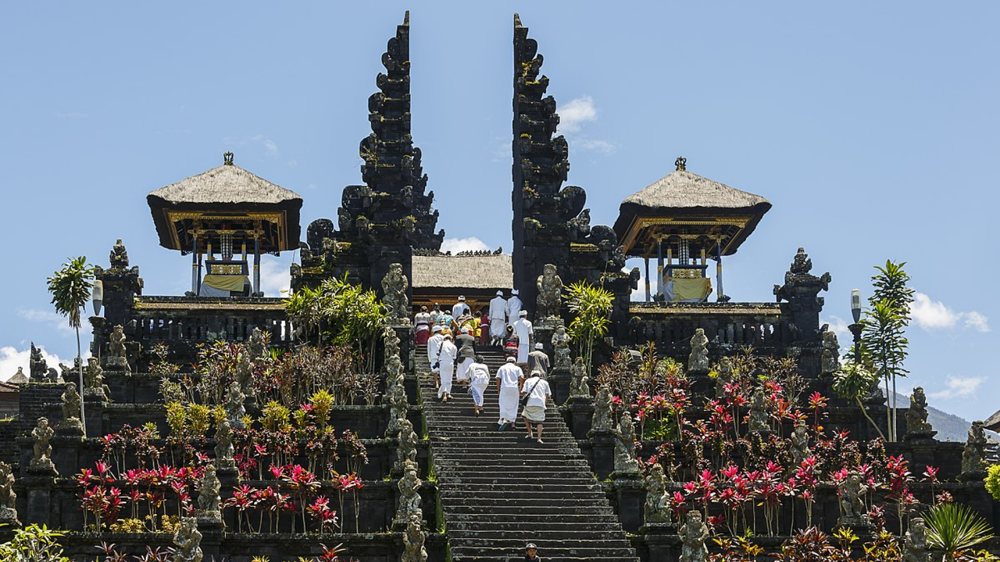
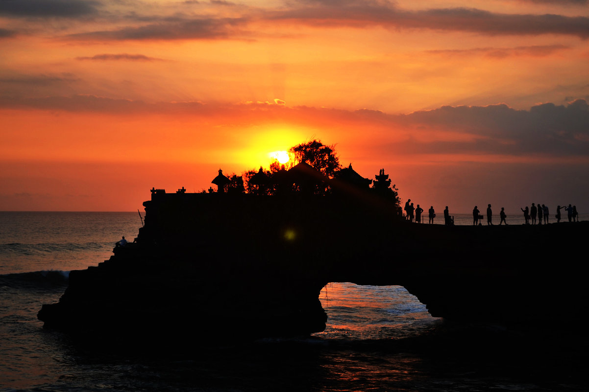
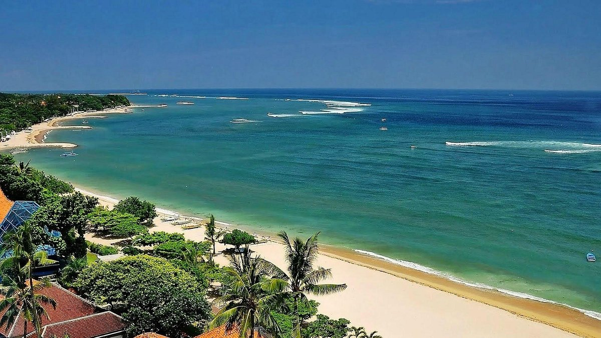

Sejarah

Pulau Bali kuno telah dihuni oleh bangsa Austronesian sekitar 2000 tahun sebelum masehi. Yang bermigrasi dan berasal dari Taiwan melalui Maritime Asia Tenggara. Budaya dan bahasa dari orang Bali demikian erat kaitannya dengan orang-orang dari kepulauan Indonesia, Malaysia, Filipina, dan Oseania. Penemuan purbakala seperti Alat-alat batu yang berasal zaman Austronesia telah ditemukan di dekat desa Cekik di sebelah barat pulau Bali. Masa Bali kuno terdapat sembilan sekte Hindu yaitu Pasupata, Bhairawa, Siwa Shidanta, Waisnawa, Bodha, Brahma, Resi, Sora dan Ganapatya. Setiap sekte menghormati dewa tertentu sebagai Ketuhanan pribadinya. Budaya Bali sangat dipengaruhi oleh budaya India, Cina, dan khususnya Hindu. Budaya tersebut dimulai sekitar abad 1 Masehi.
Nama Bali Dwipa (“Pulau Bali”) telah ditemukan dari berbagai prasasti, termasuk pilar prasasti Blanjong yang ditulis oleh Sri Kesari Warmadewa pada tahun 914 masehi yang menyebutkan “Walidwipa”. Pada masa itu sistem irigasi Subak yang kompleks sudah dikembangkan untuk menanam padi. Beberapa tradisi keagamaan dan budaya masih ada sampai saat ini dan dapat ditelusuri kembali saat anda ke bali (Informasi Umum Tentang Bali). Kerajaan Hindu Majapahit (1293-1520 Masehi) di Jawa Timur mendirikan sebuah koloni di Bali pada tahun 1343. Pada abad ke-15 Masehi ketika kerajaan Majapahit dikalahkan oleh kekuatan kerajaan Islam Demak, ada eksodus besar-besaran orang Jawa-Hindu dari intelektual, seniman, pendeta, dan musisi dari pulau Jawa ke pulau Bali.
Geografis

Pulau Bali adalah bagian dari Kepulauan Sunda Kecil sepanjang 153 km dan selebar 112 km sekitar 3,2 km dari Pulau Jawa. Secara geografis, Bali terletak di 8°25′23″ Lintang Selatan dan 115°14′55″ Bujur Timur yang membuatnya beriklim tropis seperti bagian Indonesia yang lain.
Gunung Agung adalah titik tertinggi di Bali setinggi 3.148 m. Gunung berapi ini terakhir meletus pada Maret 1963. Gunung Batur juga salah satu gunung yang ada di Bali. Sekitar 30.000 tahun yang lalu, Gunung Batur meletus dan menghasilkan bencana yang dahsyat di bumi. Berbeda dengan di bagian utara, bagian selatan Bali adalah dataran rendah yang dialiri sungai-sungai. Berdasarkan relief dan topografi, di tengah-tengah Pulau Bali terbentang pegunungan yang memanjang dari barat ke timur dan di antara pegunungan tersebut terdapat gugusan gunung berapi yaitu Gunung Batur dan Gunung Agung serta gunung yang tidak berapi, yaitu Gunung Merbuk, Gunung Patas dan Gunung Seraya. Adanya pegunungan tersebut menyebabkan Daerah Bali secara Geografis terbagi menjadi 2 (dua) bagian yang tidak sama yaitu Bali Utara dengan dataran rendah yang sempit dan kurang landai dan Bali Selatan dengan dataran rendah yang luas dan landai. Kemiringan lahan Pulau Bali terdiri dari lahan datar (0-2%) seluas 122.652 ha, lahan bergelombang (2-15%) seluas 118.339 ha, lahan curam (15-40%) seluas 190.486 ha dan lahan sangat curam (>40%) seluas 132.189 ha. Provinsi Bali memiliki 4 (empat) buah danau yang berlokasi di daerah pegunungan, yaitu Danau Beratan atau Bedugul, Buyan, Tamblingan, dan Batur. Alam Bali yang indah menjadikan pulau Bali terkenal sebagai daerah wisata.
Wisata
Bali adalah pesona wisata yang sangat terkenal di Indonesia. disana kita bisa disuguhi pemandangan alam yang sangat indah, banyak pantai serta tempat wisata budaya yang dapat kita jumpai. Bali merupakan salah satu provinsi di Indonesia yang namanya sudah terkenal hingga ke mancanegara. pulau bali juga dikenal sebagai pulau Dewata karena keindahan dan kekayaan budayanya.
Ubud

Sebagai kawasan pariwisata, Ubud memiliki daya tarik yang berbeda dengan kawasan Bali lainnya. Di kawasan Kuta, Nusa Dua dan Jimbaran, daya tarik utama ada di pantai pasir putih. Saat berada di kawasan Ubud Bali, Anda tidak akan menemukan satu pun pantai pasir putih. Daya tarik utama adalah seni, budaya, alam pedesaan, pasar tradisional, ayunan dan arung jeram. Hal yang bisa dilakukan yaitu:
1. Ayunan Bali Ada banyak sekali tempat di Ubud yang menawarkan Swing Experience, harga tiket masuknya mulai dari Rp 25rb hingga sekitar Rp 500rb tergantung paket yang dipilih, salah satu tempat Swing yang paling ikonik adalah "Bali Swing". Terkadang operator Swing juga dapat menawarkan paket Arung Jeram kepada Anda.
2. Kebun Binatang Bali Jika Anda bepergian dengan Anak-anak, atau Anda suka melihat binatang, Anda dapat mengunjungi Kebun Binatang Bali. Ada begitu banyak jenis hewan dari seluruh dunia, Anda juga dapat memberi makan hewan, dan berfoto dengan hewan-hewan itu.
Pantai Kuta

Tentang Kuta Sejak tahun 70-an, tempat wisata Kuta Bali khususnya kawasan pantai masih menjadi daya tarik tersendiri bagi wisatawan liburan ke pulau Bali. Kuta memiliki keindahan pantai pasir putih yang menawan, terbentang sepanjang 2 km, ombaknya yang tinggi dan memanjang, sehingga ideal untuk berselancar. Pantai Kuta sangat sempurna menghadap ke barat, menjadikannya tempat yang menakjubkan untuk menyaksikan keindahan matahari terbenam. Makanan yang bisa dinikmati di pantai Kuta yaitu:
1. Sate Babi Bawah Pohon (Sate Babi) Ini dia sate babi legendaris yang paling viral karena kelezatannya, biasanya halaman rumah makan ini akan dipenuhi oleh mobil-mobil ujung yang parkir, Anda juga akan melihat banyak orang yang mengantri untuk meja mereka atau menunggu makanan dibawa pulang di sini. Lokasi restoran ada di: Jalan Dewi Sri IV Campuhan I No.I, Legian, Kuta
2. Nakal Nuris Seminyak Ini juga restoran yang sangat populer, biasanya orang harus mengantri minimal 15 menit untuk mendapatkan meja, bahkan saat musim ramai, orang rela menunggu berjam-jam untuk mendapatkan meja, menu andalan di restoran ini adalah daging babi. Tulang iga. Lokasi bar ada di: Jalan Mertanadi No. 62 Seminyak, Kuta Utara.